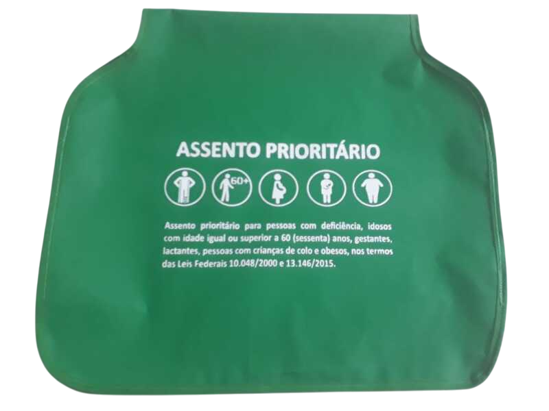
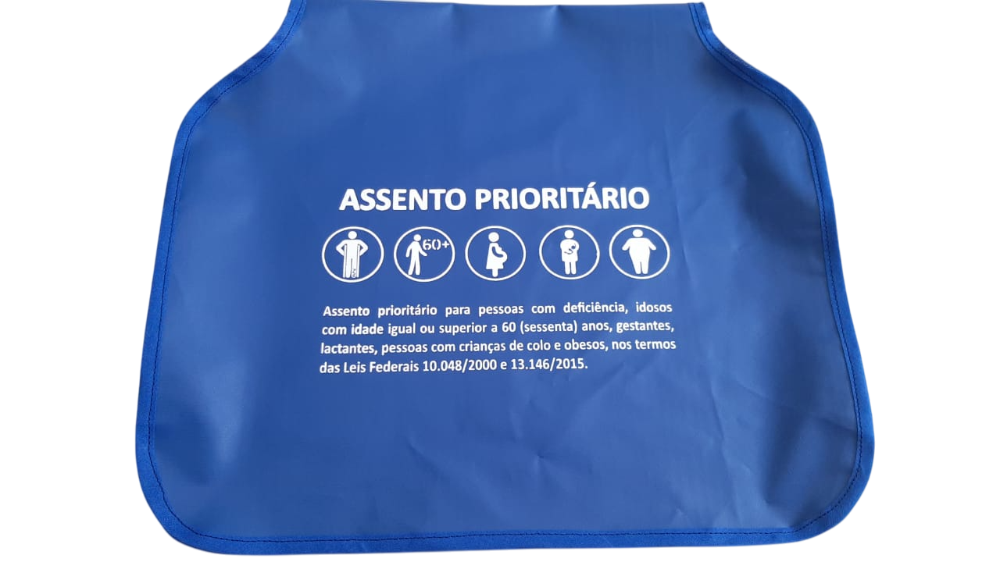

Capa para Assento Prioritário


Capa para assento prioritário confeccionada em nylon resistente, com elástico nas laterais, proporcionando melhor fixação e adaptação a diversos tipos de assentos.
Possui logo branco aplicado de forma discreta, garantindo identificação clara sem comprometer o visual do ambiente.
Ideal para uso em transporte coletivo, hospitais, clínicas, empresas e espaços que necessitam de sinalização de assentos prioritários.
Características
- Dimensão: 40 x 46 cm
- Material: Nylon resistente
- Fixação: Elástico nas laterais
- Cores disponíveis: Azul e Verde
- Aplicação: Assentos prioritários
Para mais informações sobre este produto, entre em contato com nossa equipe.
Solicitar informações